El conflicto del ' niño balsero '.
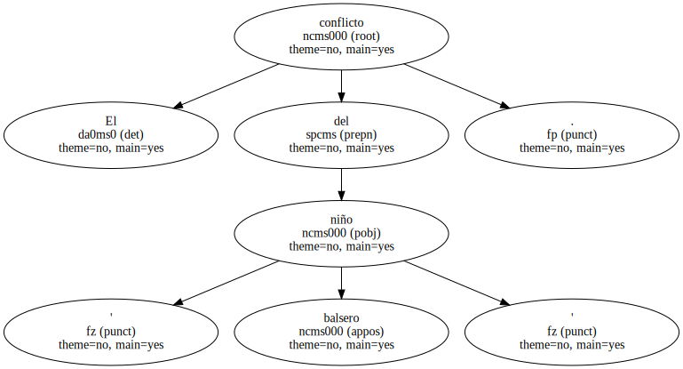Las empresas estadounidenses ya piensan en las oportunidades comerciales del poscastrismo.

Mientras los cubanos de Miami y de Cuba se desgarran por la custodia del pequeño Elián González , arrastrando a Washington a la refriega , las empresas estadounidenses no quitan ojo al suculento mercado en que se ha convertido la perla del Caribe , una presa vedada hasta ahora por el embargo comercial impuesto hace cuatro décadas , que terminará cayendo como una fruta madura en los brazos de las potentes corporaciones estadounidenses.
" Habrá una gran bonanza de oportunidades " , asegura Sergio Díaz-Briquets , presidente de la Asociación para el Estudio de la Economía Cubana.
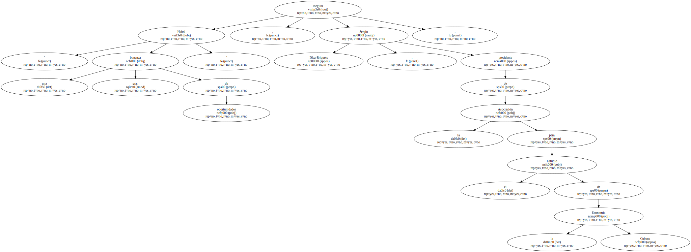Teo Babun , director de Cuba-Caribbean Development Co. , espera grandes beneficios para las empresas de todo el país y , sobre todo , de Florida , una vez que desaparezca el régimen castrista.
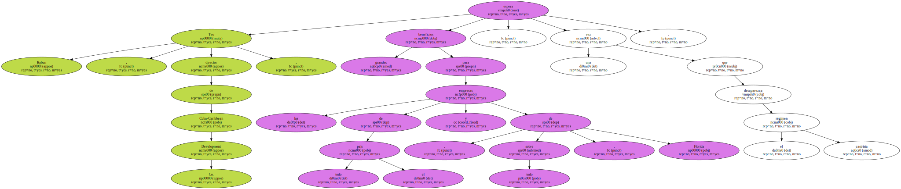Babun confía en que Cuba se convierta en el principal socio comercial de Florida en los primeros cinco años tras la caída de Castro.
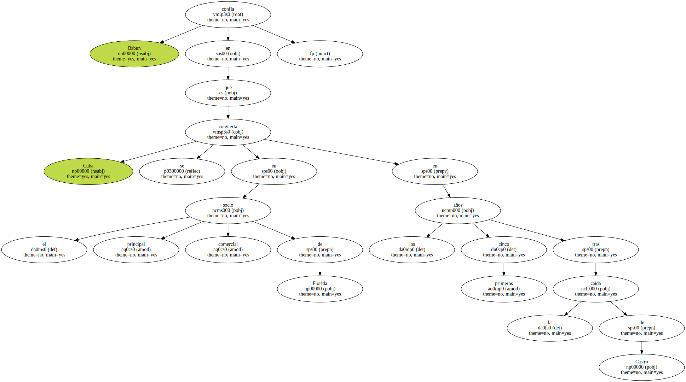También cuenta con que los 11 millones de cubanos , reducidos actualmente a la miseria , sean ávidos consumidores del arroz cultivado en Luisiana , de la carne exportada por Illinois y de los textiles que fabrican las dos Carolinas.
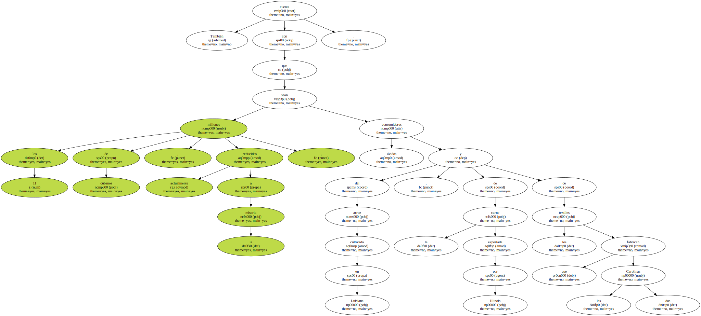Tejas y Houston se disputarán los contratos para renovar los numerosos puertos cubanos de carga.
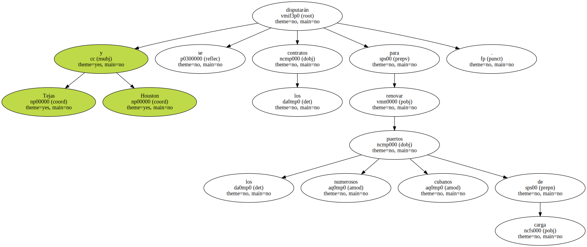Aunque Estados Unidos siga empeñado en mantener el embargo , otros muchos países han incrementado en los últimos años sus intercambios comerciales con La Habana , empezando por España , principal exportador internacional a Cuba , que suministra el 17% del total importado por los cubanos.
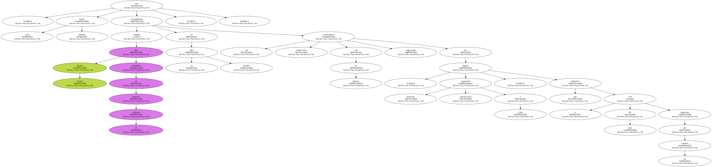Más de un centenar de corporaciones de 30 países invierten actualmente 850.000 millones de pesetas en Cuba.
Esta cifra no sólo ha atraído la atención de las empresas estadounidenses , sino que también ha aumentado su ansiedad , pues augura una gran competencia internacional por la conquista de Cuba , cuando desaparezca el embargo.
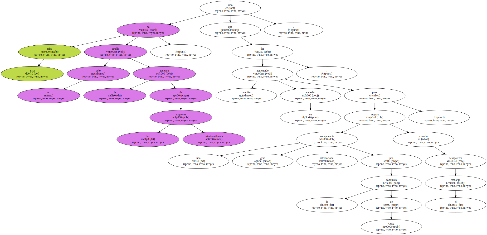Hay ya ciertos sectores en que los dos archienemigos pueden negociar , porque están excluidos del embargo , como los vuelos chárter , las telecomunicaciones , el espectáculo , productos agrícolas , medicinas , el arte o , en general , todo aquello que , a ojos de Washington , no beneficia al Gobierno castrista.
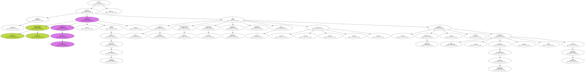Entre octubre de 1994 y diciembre de 1999 , la balanza comercial estadounidense con Cuba llegó a 127.500 millones de pesetas , una gota en el océano de beneficios que el mundo empresarial estadounidense espera cosechar en el poscastrismo.
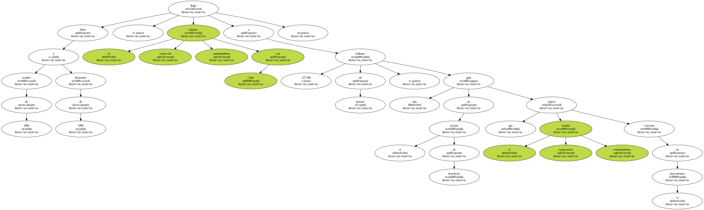Sin embargo , la espera puede ser larga , pues la opinión generalizada entre los exiliados y expertos en temas cubanos es que sólo la muerte de Fidel Castro desbloqueará las relaciones comerciales entre Cuba y Estados Unidos.
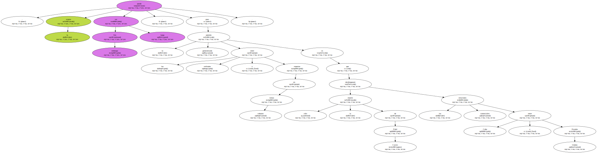" Cuando Castro muera , será el principio del fin del embargo " , sostiene Carmelo Mesa-Lago especialista en economía caribeña de la Universidad de Pittsburgh.
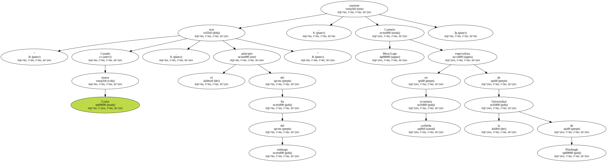Muchos exiliados cuentan con un periodo de inestabilidad tras la muerte de Castro , seguido por la formación de un Gobierno con el que Washington levantará el embargo.
Raúl Castro , hermano de Fidel , podría asumir el mando , aunque no se le considera suficientemente carismático para conducir a Cuba a una transición pacífica.
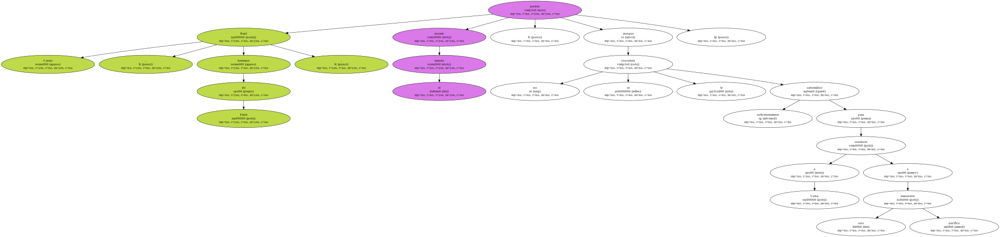